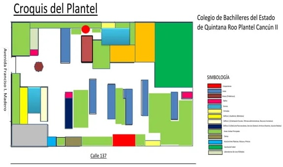

El Colegio
El Colegio de Bachilleres Plantel Cancún Dos es una de las escuelas más grandes del estado. Conocida por su gran reputación, métodos de trabajo, personal agradable, buen método de estudio y buenas instalaciones. Entre sus principios se toma competencia en la vida escolar como cotidiana, la actitud positiva y su práctica de valores en busca de mejorar la calidad de la formación humana y profesional de los alumnos.
 Cuenta con instalaciones como:
- 2 laboratorios de informática.
- Sala de medios.
- Sala audiovisual.
- Cancha de basquetbol, voleibol y futbol.
- Laboratorio de química.
- Laboratorio de inglés con sala de audiovisual y computadoras.
- Biblioteca escolar.